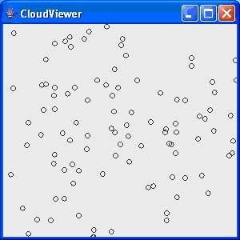

Programming Assignment
7
DUE at the starting of the class on 10/22/2007 (Monday)
Do the following question from the text book:
1) Exercise P7.1.4
Implement a class Cloud that contains an array list of Point2D.Double
objects. Support methods
public void add(Point2D.Double aPoint)
public void draw (Graphics2D g2)
Draw each point as a tiny circle. Write a graphical application that draws
a cloud of 100 random points.
Here is a sample program output:

Use the following class in your solution: (Given to you guys)--> Format the
code according to the class style.
Hint...!!!! (Cloud.java)
import java.awt.geom.Point2D;
import java.awt.geom.Ellipse2D;
import java.awt.Graphics2D;
import java.util.ArrayList;
/**
This class draws a cloud of circles.
*/
public class Cloud
{
/**
Construct a Cloud object.
*/
public Cloud()
{
points = new ArrayList<Point2D.Double>();
}................
..................
}